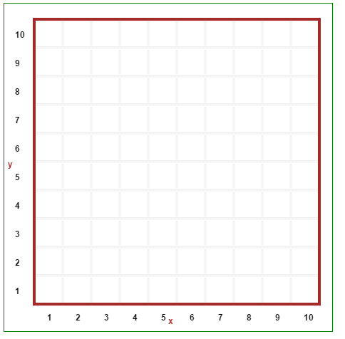
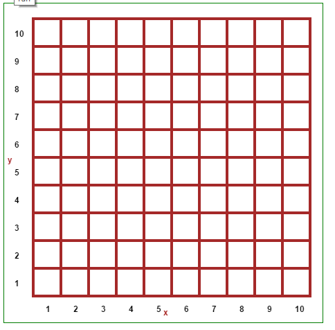
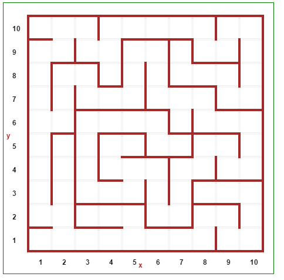
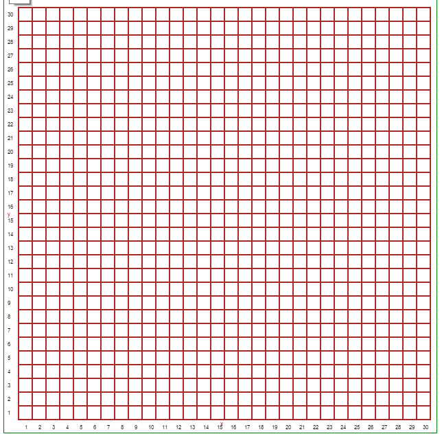

Warning
This document is in the middle of a major revision. Some sections might be missing text, or have French text as placeholder.
In this section, we take a look at automatic maze generation and simple solutions. The approach we use to generate mazes is a depth-first algorithm mentioned on https://en.wikipedia.org/wiki/Maze_generation_algorithm, with a Python implementation found on http://rosettacode.org/wiki/Maze_generation#Python.
Note
A quick word about the notation. RUR is a general namespace
used in Reeborg’s world; it is named for Reeborg the UsedRobot.
RUR.we denotes the functions found in world_editor.js;
RUR.vis_world denotes the functions found in visible_world.js.
world_editor.js contains most of the functions used for the graphical world editor.
We first start by creating a grid with all cells surrounded by four walls. In Reeborg’s World, we only record two walls per cell location: one located to the right (“east”) and one located above (“north”) of that location. The entire world itself is surrounded by a border of walls, so we do not need to generate walls to the right of the last column or above the upper row.
def make_filled_maze(w, h):
'''Creates a maze of size w by h with
all grid cells surrounded by walls
'''
RUR.we.remove_all()
RUR.vis_world.compute_world_geometry(w, h)
for i in range(1, w):
for j in range(1, h):
RUR.we.toggle_wall(i, j, "east")
RUR.we.toggle_wall(i, j, "north")
for i in range(1, w):
RUR.we.toggle_wall(i, h, "east")
for j in range(1, h):
RUR.we.toggle_wall(w, j, "north")

Important
Maze generation examples, in Python and Javascript, are available from the world menu. Usually, the conversion by Brython of Python code to Javascript code results in code that runs with comparable speed to pure Javascript code. However, for the maze generation case, the Javascript code runs much faster.
One can use the Javascript code to generate mazes (worlds i.e. json files) that can be used later with either programming language.
Once we have a grid filled with walls, we transform it into a maze as follows:
This is easily implemented using recursion:
from random import shuffle, randrange
def make_maze(w = 16, h = 8):
visited = [[False] * w + [True] for _ in range(h)] + [[True] * (w + 1)]
def walk(x, y):
visited[y][x] = True
d = [(x - 1, y), (x, y + 1), (x + 1, y), (x, y - 1)]
shuffle(d) # 2 randomize neighbours
for (xx, yy) in d:
if visited[yy][xx]: # 3 (ignore visited)
continue
if xx == x:
RUR.we.toggle_wall(x+1, min(y, yy)+1, "north") # 4
elif yy == y:
RUR.we.toggle_wall(min(x, xx)+1, y+1, "east") # 4
RUR.rec.record_frame()
walk(xx, yy) # recursive call; push ahead
# 5; after recursion, effectively backtrack
walk(randrange(w), randrange(h)) # 1

The above algorithm is adapted from
http://rosettacode.org/wiki/Maze_generation#Python.
An interesting feature of that algorithm is that it
appends extra fake visited list items to avoid generating an IndexError
when reaching index values greater than the size of the lists,
cleverly making use of the fact that [-1] refers to the last item in a list.
(I wouldn’t have thought of that on my own.)
The entire code is the following:
from random import shuffle, randrange, randint
# Maze parameters
max_x = 5
max_y = 5
RUR.current_world.small_tiles = False
# display related options
RUR.MAX_STEPS = 2000 # bigger for large mazes
think(30)
def make_filled_maze(w, h):
'''Creates a maze of size w by h with
all grid cells surrounded by walls
'''
RUR.we.remove_all()
RUR.vis_world.compute_world_geometry(w, h)
for i in range(1, w):
for j in range(1, h):
RUR.we.toggle_wall(i, j, "east")
RUR.we.toggle_wall(i, j, "north")
for i in range(1, w):
RUR.we.toggle_wall(i, h, "east")
for j in range(1, h):
RUR.we.toggle_wall(w, j, "north")
RUR.rec.record_frame()
def make_maze(w = 16, h = 8, name="maze"):
'''Adapted from
http://rosettacode.org/wiki/Maze_generation#Python
"name" is the value used to save the maze in the
browser's local storage so that it is available
if the page is reloaded.
'''
make_filled_maze(w, h)
pause(500)
vis = [[False] * w + [True] for _ in range(h)] + [[True] * (w + 1)]
def walk(x, y):
vis[y][x] = True
d = [(x - 1, y), (x, y + 1), (x + 1, y), (x, y - 1)]
shuffle(d)
for (xx, yy) in d:
if vis[yy][xx]:
continue
if xx == x:
RUR.we.toggle_wall(x+1, min(y, yy)+1, "north")
elif yy == y:
RUR.we.toggle_wall(min(x, xx)+1, y+1, "east")
RUR.rec.record_frame()
walk(xx, yy)
walk(randrange(w), randrange(h))
reeborg = UsedRobot(randint(1, max_x), randint(1, max_y))
RUR.we.add_object("star", randint(1, max_x), randint(1, max_y), 1)
RUR.rec.record_frame()
RUR.storage.save_world(name)
def turn_right():
turn_left()
turn_left()
turn_left()
make_maze(max_x, max_y)
pause(500)
while not object_here():
if right_is_clear():
turn_right()
move()
elif front_is_clear():
move()
else:
turn_left()
It includes the addition of a robot, a star, and a quick method for the robot to find the star.

The lines RUR.rec.record_frame()
are instructions to “take a snapshot” (or “record
a frame”) of the world’s state at that point. In case you have
not read the rest of the documentation: in Reeborg’s World,
programs are first run entirely in the background, with various frames
being recorded; the series of frames are then played back, one at a
time, with a delay that can be adjusted using think(ms), which is
supposed to represent the amount of time taken by the robot to think
between each action.
RUR.storage.save_world(name) saves the maze in the browser’s local
storage, so that it could be retrieved when accessing Reeborg’s World
at a later time (using the same browser, of course). We’ve also
added a robot and an object to find. The strategy used by the robot
to find the object consists in “following the right wall”, moving in
such a way that a wall is always present to its immediate right.
Note that we’ve also included various calls to pause(), useful
for having a closer look at various stages.
Note: while the frames are being recorded, the display is effectively frozen. [As mentioned above, the pure Javascript code is much faster and do not cause such long delays.] For example, it took 40 seconds before the following started to display:

How to use for students
If one wants to have worlds based on some randomly generated mazes, the preferred approach would be to include the maze-generation code in the “pre-code” part of the world, so that the Editor would contain only the student’s code.